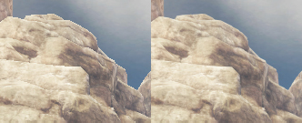
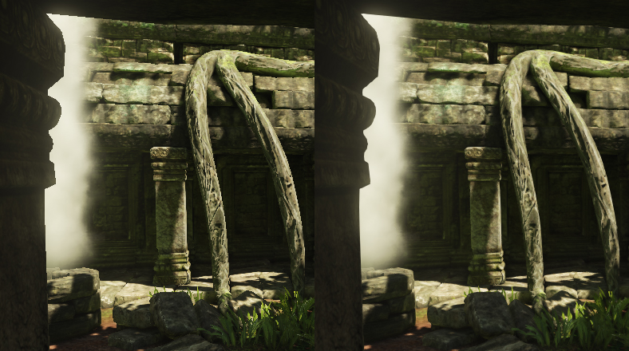

UDN
Search public documentation:
PostProcessAACH
English Translation
日本語訳
한국어
Interested in the Unreal Engine?
Visit the Unreal Technology site.
Looking for jobs and company info?
Check out the Epic games site.
Questions about support via UDN?
Contact the UDN Staff
日本語訳
한국어
Interested in the Unreal Engine?
Visit the Unreal Technology site.
Looking for jobs and company info?
Check out the Epic games site.
Questions about support via UDN?
Contact the UDN Staff
后期抗锯齿效果
 |
|  |
| 该图片会显示一些远处的岩石（为了使视觉效果更好，顶部被放大了 2 倍）。 左图： 该图片受到锯齿影响（没有 MSAA） 右图： 同一张图片经过 PostProcessingAA 处理后。 |
概述
- 如果内容变得太小（例如，边框线）
- 如果内容移动得较慢（例如，在轻微移动相机的时候查看楼梯的状况）
- 如果计划将内容制作为硬边的（例如，手绘美术作品或文本）
|  |
| 该图片清楚地显示了通常在对比强烈的地方会出现锯齿现象。这些区域可以通过这种方法有效地进行定位。 但是，这个图片整体看上去锐化度降低了一些。在这里可以调整 MLAA，不过 FXAA 不会提供任何控件。 |
如何激活？
 将这个类型变为激活状态，更改方法（MLAA 或 FXAA）和质量等级。阙值属性只适用于 MLAA 实现。
另外，您可以在游戏中使用控制台变量 PostProcessAAType ：
将这个类型变为激活状态，更改方法（MLAA 或 FXAA）和质量等级。阙值属性只适用于 MLAA 实现。
另外，您可以在游戏中使用控制台变量 PostProcessAAType ：
允许重写后期处理抗锯齿类型。 <0: 使用后期处理设置（默认值： -1) 0: 关闭 1-6: FXAA Preset 0：低质量 .. 5：非常高的质量但是慢（渲染 1 遍） 7: MLAA（需要其他渲染目标（要求 .ini 中的 bAllowPostprocessMLAA=True），渲染 3 遍）因为 MLAA 需要其他内存，所以需要明确地启用它。需要通过以下代码更改下面的 ini 设置（例如，在 BaseEngine.ini 中）激活：
bAllowPostprocessMLAA = False改变为：
bAllowPostprocessMLAA = True注意： 也可以在运行时使用下面的控制台命令更改这个 ini 设置：
scale toggle bAllowPostprocessMLAA
实现具体细节
- 渲染一遍
- 需要各向异性贴图查找
- 渲染三遍
- 不同性能/质量的多个等级
- 需要其他中间渲染目标内存（可以进行优化）
- 内部细节稍微少一些的模糊效果
- 45 度边变得更宽
支持的平台
- FXAA: DX9, DX11, Xbox360, PlayStation3
- MLAA: DX9, DX11（未经测试的 Xbox360 和 PlayStation3）
参考指南
- 由 Intel 研制的 Morphological Antialiasing (MLAA)
http://visual-computing.intel-research.net/publications/papers/2009/mlaa/mlaa.pdf
- 由 NVIDIA 研制的 FXAA
http://developer.download.nvidia.com/assets/gamedev/files/sdk/11/FXAA_WhitePaper.pdf
鸣谢
- Intel 开发研制 MLAA
- AMD CAS 团队实现了 GPU MLAA
- NVIDIA 实现了 FXAA